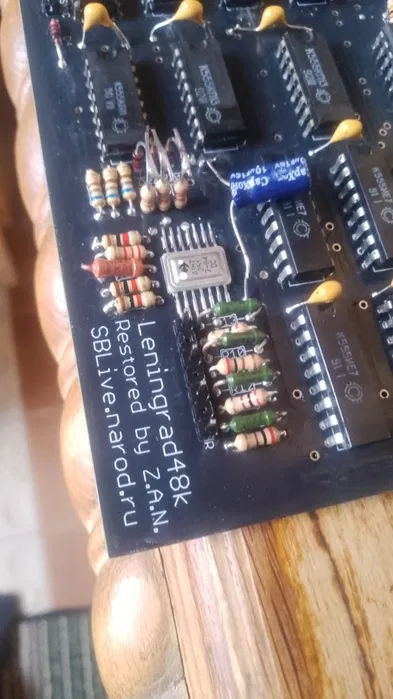

ZX Spectrum Ленінград 48 (зібраний) — це ідеальний варіант для тих, хто хоче одразу почати користуватись ретро-комп'ютером без пайки та налаштувань.
Пристрій повністю зібраний, перевірений і готовий до роботи. Просто підключіть живлення, відео — і ви вже в класичному середовищі Spectrum.
Основа — перевірена схема "Ленінград 48", яка стала однією з наймасовіших і найвідоміших реалізацій ZX Spectrum. Вона забезпечує повну сумісність із класичними іграми та програмами.
Це чудовий вибір для:
• тих, хто не хоче паяти
• швидкого старту в ретро
• подарунка фанату 8-бітної епохи
Увімкнув — і граєш.
